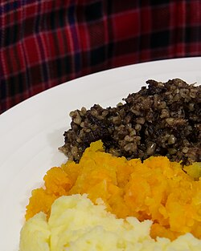

Introduction:
Today I will be making the traditional dish of my kingdom that technically I am part of its royal family: Haggis.
The recipe is from
this website
fun fact I've never had this food and never intend to you'll see why in a second
Ingredients:
- 1 ox bung, soaked for 4 hours and cleaned
- 1⅛lb of beef, or lamb trimmings or stewing steak
- 1⅛ lb of oatmeal, (coarse)
Instructions:
-
Rinse the whole pluck in cold water. Trim off any large pieces of fat and cut away the windpipe
-
Place in a good sized pot and cover with cold water. The lungs float, so keep submerged with a plate or a lid. Bring to the boil and skim the surface regularly. Gently simmer for 2 hours
-
Lift the meat from the pot with tongs or a slotted spoon, and rinse in cold water to remove any scum. Place into a bowl and leave to cool
